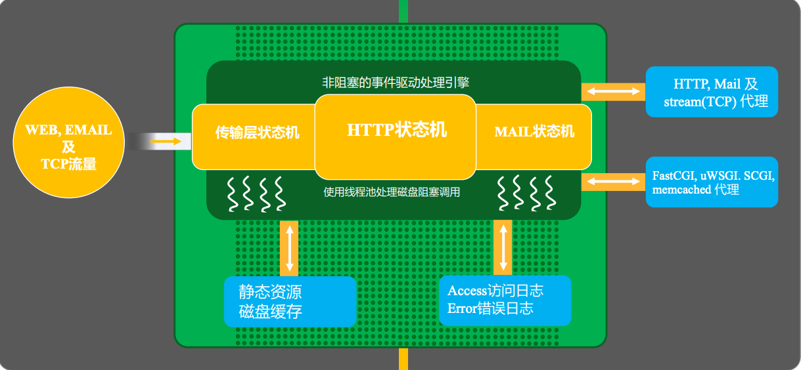
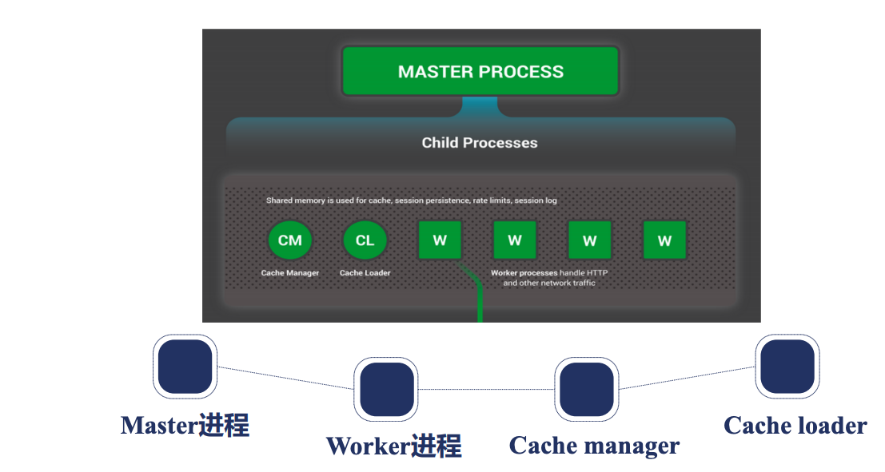
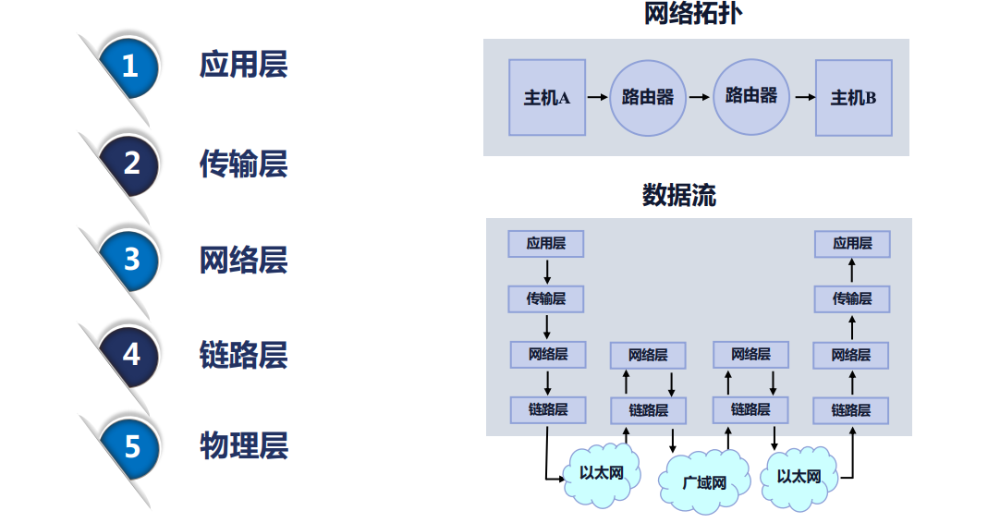
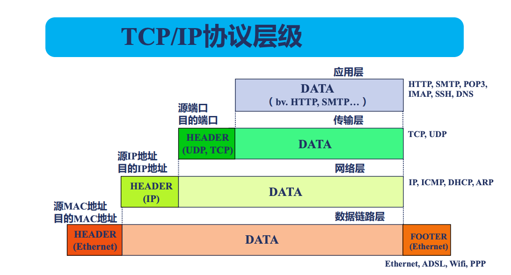

2. nginx架构基础
2.1. nginx请求处理流程
nginx接收流量， 通过fastcgi、tcp代理等转发后端。 内部完成日志处理，静态文件处理，和一些状态机处理。
2.2. nginx进程结构
基本是有个master进程的， 多个work进程的。 还可能有cache manager进程和cache loader进程。
2.3. nginx进程管理
master 进程
需要监控worker进程的chld信号
管理worker进程
接收控制信号 term int quit hup usr1 usr2 winch
work进程
接收管理信号 term quit usr1 winch
nginx命令行
reload : hup
reopen : usr1
stop : term
quit : quit
2.4. reload流程
向master发送hup信号
master校验conf配置
master打开新的端口（如果需要）
master进程用新的配置启动新的worker子进程。
master向老的worker发送quit信号
老的worker进程关闭监听句柄，处理完毕当前连接结束进程。
2.5. 热升级流程
旧nginx文件替换为新的nginx文件
给master发送usr2信号
master修改pid文件名字，加后缀.oldbin
master进程使用新的nginx文件启动新的master进程
向老的master发送quit信号，关闭老的master
如果要回滚的话， 可以给老的master发送hup信号， 给新的master发送quit信号即可。
2.6. worker进程优雅退出
设置定时器worker_shutdown_timeout
关闭监听句柄
关闭空闲连接
循环关闭断开的连接
退出进程
2.7. 网络传输
网络传输过程
tcp流与报文
2.8. epoll高性能
每次只处理活跃连接。
实现层面红黑树和链表高效。
2.9. 请求切换
apache传统web服务， 进程调度比较多。
nginx用户态完成连接切换
2.10. nginx模块
主要模块
events
http
core
errlog
mail
thread_poll
stream
openssl
2.11. 连接池
包含了对下游客户端的连接和对上游服务的连接。
2.12. 内存池
connection_poll_size 内存提前分配好一批。 大块内存使用alloc分配。
连接内存池
请求内存池 一般4k
connection_poll_size
request_poll_size
2.13. nginx进程间的通讯方式
信号和共享内存 通过共享内存的worker进程之间存在抢占问题， 需要引入锁机制。 内存管理对应需要slab内存管理器。
2.14. 哪些需要共享内存
限流类的
cache类
lua使用
2.15. nginx slab 编译使用
wget https://tengine.taobao.org/download/tengine-2.3.3.tar.gz
tar xf tengine-2.3.3.tar.gz
./configure --add-module=/root/tengine-2.3.3/modules/ngx_slab_stat
make && make install
替换掉openrest的二进制文件， 重启。
nginx配置的修改
lua_shared_dict dogs 10m;
location = /slab_stat {
slab_stat;
}
location /set {
content_by_lua_block{
local dogs = ngx.shared.dogs
dogs:set("panda",1)
ngx.say("stored")
}
}
location /get {
content_by_lua_block{
local dogs = ngx.shared.dogs
ngx.say(dogs:get("panda"))
}
}
[root@zhaojiedi-elk-2 nginx]# curl http://localhost:8084/slab_stat
* shared memory: dogs
total: 10240(KB) free: 10168(KB) size: 4(KB)
pages: 10168(KB) start:00007F3CCFB54000 end:00007F3CD0544000
slot: 8(Bytes) total: 0 used: 0 reqs: 0 fails: 0
slot: 16(Bytes) total: 0 used: 0 reqs: 0 fails: 0
slot: 32(Bytes) total: 127 used: 1 reqs: 1 fails: 0
slot: 64(Bytes) total: 0 used: 0 reqs: 0 fails: 0
slot: 128(Bytes) total: 32 used: 2 reqs: 2 fails: 0
slot: 256(Bytes) total: 0 used: 0 reqs: 0 fails: 0
slot: 512(Bytes) total: 0 used: 0 reqs: 0 fails: 0
slot: 1024(Bytes) total: 0 used: 0 reqs: 0 fails: 0
slot: 2048(Bytes) total: 0 used: 0 reqs: 0 fails: 0
2.16. nginx容器
2.16.1. 哈希表配置
bucket_size : 控制每个的大小。
max_size 这个控制一共最多不能超过多少个。
2.16.2. 红黑树
自平衡的二叉查找树的特点
高度不会超过2 log(n)
增删改查复杂度log(n)
遍历复杂度o(n)
2.17. 如何编译动态模块
动态模块一些，频繁更新的时候建议使用动态模块， 不用每次去更新二进制文件的。 这个在编译的时候使用–add-dynamic-module即可。